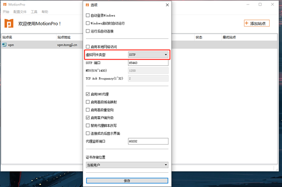

装了快一年MotionPro，聊聊这款企业VPN客户端的真实体验
从最初抵触到离不开，再到踩了Win11家庭版的反复重连大坑，长期用下来MotionPro给我的感受不是惊艳，而是一种"凑合用但离不开"的真实。
当初为什么装它——不是我选的，是公司IT替我选的
去年下半年公司统一换了VPN方案，之前用了好几年的某老牌客户端被替换成了MotionPro Plus。说实话一开始挺抵触的——换客户端意味着重新适应界面、重新配置网关，而且那阵子我正忙着赶一个项目，最怕这种"IT基础设施升级"的事情。
但抵触归抵触，该装还是得装。我之前也没细看它的官网，IT给的安装包是从官方下载拿的，里面包含了预配置好的网关文件，双击导入之后登录账号就能连。我记得第一次连成功的时候没什么惊喜，就是内网OA能打开了、共享盘能访问了，和之前那个客户端能做到的事情差不多。那时候的判断很简单：又一个VPN客户端而已，能连就行。
越用越顺手的：门户和远程桌面
让我对MotionPro改观的是两个功能，而且都不是它作为"VPN"的核心能力。
第一个是企业应用门户。登录之后，除了建立L3VPN隧道，MotionPro还会跟网关的门户组件通信，根据我的账号权限动态下发一个资源列表。之前用旧客户端的时候，连VPN之后打开内网应用全靠浏览器收藏夹——OA在浏览器标签一、财务系统在标签三、Wiki不知道塞哪了。现在这些全部集中在MotionPro客户端内的门户界面里，按Web应用、远程桌面、文件服务器分类展示，每个资源都有图标和描述。IT调整权限之后我下次登录就能看到变化，不需要更新客户端，这点让我很意外。
第二个是DesktopDirect的远程桌面，尤其是搭配Wake-on-LAN的远程开机功能。我的办公PC是2019年的ThinkPad，主板和网卡都支持WoL，BIOS里开启一下、Windows设备管理器里勾上"允许此设备唤醒计算机"，周末在家想取个文件的时候，点开MotionPro门户里已经注册好的PC，点一下"唤醒"按钮，等个一分钟状态变绿，就能远程接管了。冬天的周末不用跑公司开电脑，这个功能是真的香。

移动端的体验也值得提一下。iPhone上用MotionPro Plus，企业门户的界面比旧版客户端做得漂亮太多——资源分类标签页、搜索框、收藏功能都有，连上之后状态栏会显示VPN标识。之前用旧客户端的时候，iOS上连VPN经常需要退到设置里手动切换，MotionPro Plus基本在App内就能完成所有操作。
越用越烦的：反复重连和"未知的主机"
说好的，接下来该说糟心的了。MotionPro给我添的麻烦主要集中在两个场景，而且一开始我都以为是自己网络的问题，折腾了好久才发现不是。
第一个坑是反复重连。我的笔记本是Windows 11家庭中文版，MotionPro连上之后托盘图标经常在绿色、黄色、红色之间循环切换——刚显示连接成功几秒钟就断了、自动重连又断，内网资源一会儿能访问一会儿不能用。那阵子我以为是家里WiFi信号不稳、或者公司网关有问题，换过手机热点、清过DNS缓存、甚至把系统的网络重置了一遍，问题都没解决。
后来去MotionPro文档翻了一下才找到解法：Windows 11家庭中文版和MotionPro存在已知的兼容性问题，最有效的解法是切换虚拟网卡类型——MotionPro的配置文件→高级→虚拟网卡类型，在SSTP（默认）和VNIC之间切换。我从SSTP切到VNIC，断开重连之后就再也没出过反复重连的问题。这个坑让我对MotionPro的印象打了折扣：一个企业级客户端，跟主流系统版本的兼容性问题为什么要让用户自己查资料、自己动手切驱动来解决？

第二个常见报错是"未知的主机"。在公司内网里尝试连VPN的时候，MotionPro会弹出这个错误。一开始我以为是网关地址填错了，反复核对了好几遍配置文件。后来才搞明白：有些VPN网关域名只在公网DNS上注册、内网DNS里没有，在内网环境下反而解析不了。解决方法很简单——换手机热点再连。但每次在内网需要连VPN的时候都得先关WiFi、开热点，这个操作流程真的有点笨。
观感修正：从"又一个VPN"到"一套完整的企业访问方案"
用了大半年之后，我对MotionPro的最初判断被推翻了。
一开始我以为它就是个隧道工具，核心价值就是"能连内网"。但现在回头看，MotionPro Plus实际上是把企业门户的整套功能从浏览器端搬到了客户端内——一条L3VPN隧道解决网络层面的连通，门户组件解决应用层面的入口统一，DesktopDirect解决远程办公的终端接管，安全浏览器解决Web应用的隔离访问。这不是一个VPN客户端，这是一套面向企业远程办公的完整访问方案。
这个定位修正让我对它的评价从"够用就行"变成了"设计得挺用心"。尤其是门户那一块，网关端策略驱动、客户端只负责展示，IT调整权限后用户登录即生效的动态下发机制，比我之前用过的任何同类产品都灵活。
但反过来，我也低估了企业级软件的兼容性复杂度。虚拟网卡驱动跟系统版本的适配、跟其他VPN客户端的内核扩展冲突、不同网络环境下DNS解析的差异——这些问题在个人软件里很少见，但在企业客户端里却是日常。MotionPro的排查指南写得倒是挺详细，但让用户自己去切驱动、改系统设置、换网络环境来绕开兼容性问题，总感觉是产品成熟度还没到位的信号。
去留结论：目前凑合用，但在观察替代方案
坦白说我没有选择权——公司的IT方案绑定了MotionPro，客户端是强制安装的，网关配置也是IT统一下发的。但如果假设我有选择权的话，我的态度大概是这样：
留着的理由：门户统一入口、远程桌面加WoL、移动端体验好，这三个是真的每天在用的。尤其是周末在家取个文件这种场景，没有WoL我就得跑一趟公司。
想换的信号：如果以后换电脑预装的不是Win11家庭版（或者MotionPro的兼容性修复了），反复重连这个最大的痛点消失了，那MotionPro会是个"没什么可抱怨"的选择。但如果未来公司再换VPN方案，我不会主动反对——毕竟套在企业IT框架里的软件，好不好用从来不是用户说了算。
说个反直觉的感受：我用了快一年MotionPro，跟它打交道最集中的时刻，反而是那些报错的时候。排查"未知的主机"、切换虚拟网卡类型、查WoL的BIOS设置——这些文档里有、网上也能搜得到，但真正让人记住一款软件的，往往是你花时间跟它的bug磨合的那些日子。MotionPro就是这样：日常用的时候它存在感很低，只有出问题的时候才会让你注意到它的存在。而现在它不出问题的时候，我已经忘了当初为什么抵触装它了。
MotionPro这套资料在GitHub、Gitee、GitCode三个仓库都有同步，文档维护和更新都会跟着走，国内访问Gitee或GitCode通常比GitHub顺畅一些。